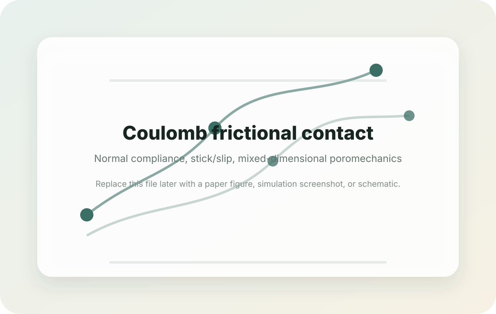

JournalVEM fully discrete Nitsche’s discretization of Coulomb frictional contact-mechanics for mixed-dimensional poromechanical models
Computational Geosciences, 29, article 50 (2025)
Extends the first-order VEM–Nitsche contact framework from frictionless interfaces to Coulomb frictional contact in mixed-dimensional poromechanics, with normal compliance and the no-penetration limit treated in one formulation.
Computational / numerical core
- First-order Virtual Element Method on polytopal/polyhedral meshes
- Nitsche weak enforcement of normal and tangential contact conditions
- Coulomb friction with normal compliance/no-penetration limit
- Well-posedness and convergence analysis
- Comparison with mixed VEM plus face-bubble stabilization
Main achievements
- Coulomb-friction extension of the earlier frictionless VEM–Nitsche scheme
- Robustness study with respect to the normal stiffness parameter
- Benchmarking against a mixed VEM formulation with bubble stabilization
- 2D/3D test cases including fluid-induced fault reactivation
- Open research code associated with the paper
Physics application. Fractured or faulted porous rocks where fluid injection may reactivate faults; examples include geological storage, hydraulic stimulation, and 2D/3D fracture-network poromechanics.
